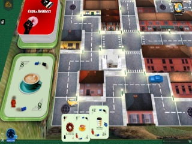
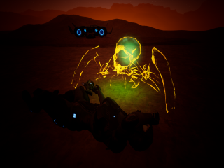
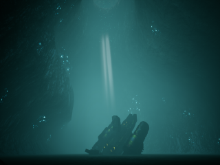

Disasters in Game Dev
This site is meant to record our indie game failures or works in progress that may never succeed: until they do. After all - "Fail Fast, Fail Often" - (from the title of this book), only helps if you think about failure. In a sense, an AI using MCTS-UCT, a powerful but simple algorithm, uses this strategy - simulate many moves, record the results, and evaluate. Anyway, so I've spent untold hours in game design and development, but I haven't created a mini masterpiece, like Masters of Orion or Cave Story - not even close - yet while it's awesome to think about making great games, I'm making time here for games that have not gone so far yet, but have stories just the same. 🙂
Speaking of stories, I considered naming this site "Game Dev Stories" but there's a book with that title, and I thought about Tales of Game Dev (and similar), but there's companies who use this already. Luckily, I didn't find many sites dedicated to Disasters in Game Dev, so I'll start here, and see where it goes.
- 
- 
- 